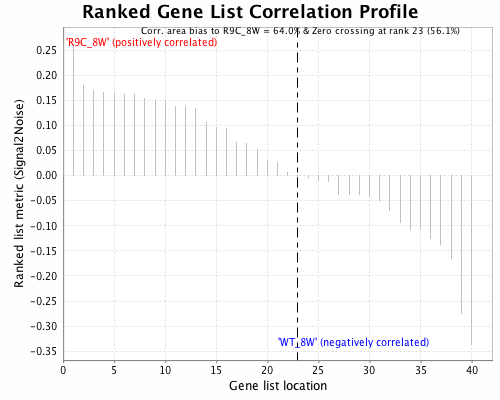

Trouble making heat map
java.lang.IllegalArgumentException: Annot features is less than dataset rowNames: 41 82
at edu.mit.broad.genome.objects.DefaultDataset.init_rows_and_cols(EIKM)
at edu.mit.broad.genome.objects.DefaultDataset.init(EIKM)
at edu.mit.broad.genome.objects.DefaultDataset.(EIKM)
at edu.mit.broad.genome.objects.DefaultDataset.(EIKM)
at edu.mit.broad.genome.objects.DefaultDataset.(EIKM)
at edu.mit.broad.genome.alg.DatasetBuilder.generate(EIKM)
at edu.mit.broad.genome.alg.DatasetGenerators.extractRows(EIKM)
at edu.mit.broad.genome.alg.DatasetGenerators.extractRows(EIKM)
at edu.mit.broad.genome.reports.MiscReports.createHeatMap(EIKM)
at edu.mit.broad.genome.reports.MiscReports.createDatasetHeatMapAndCorrelationPlots(EIKM)
at edu.mit.broad.genome.reports.EnrichmentReports.createGseaLikeReport(EIKM)
at edu.mit.broad.genome.reports.EnrichmentReports.createGseaLikeReport(EIKM)
at xtools.gsea.AbstractGsea2Tool.execute_one_with_reporting(EIKM)
at xtools.gsea.Gsea.execute(EIKM)
at edu.mit.broad.xbench.tui.TaskManager$ToolRunnable.run(EIKM)
at java.lang.Thread.run(Thread.java:680)

Fig 1: Ranked Gene List Correlation Profile
Ranked list correlations for Expressiontestfile